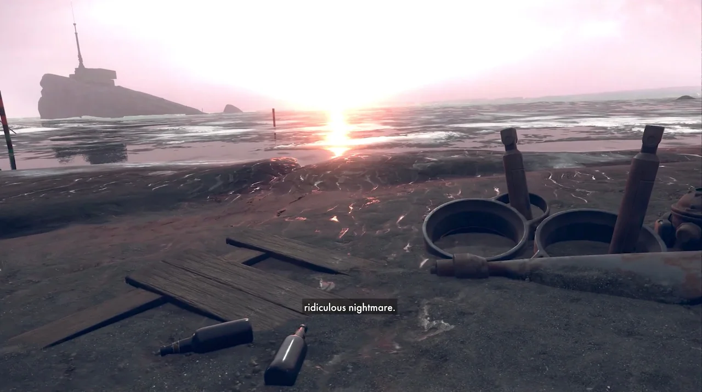

Deathloop: Aesthetics and Style
In 2021, Arkane Studios released "Deathloop", a small first-person shooter with little marketing and a low price on Steam. The game is unique, mixing a futuristic world with older, nostalgic aesthetics. The world built within the game is gorgeous yet mysterious. Character movement is fluid, while gunplay is realistic and rigid. The game is complex with many character elements changing how one can play, and many narrative objectives raising stakes and keeping the player engaged. Below is the game's official launch trailer:
NARRATIVE
Set in an island called Blackreef, Deathloop starts with Colt, the main character, waking up on the island's beach with the objective of "breaking the loop". The people native to Blackreef are all stuck in the same time loop, and every day is the same. However, Colt retains his memories through each loop, as does the main antagonist, Julianna. The island holds many visionaries responsible for the time loop, which is still a mystery and one that Colt has to solve to break the loop. As you move through the game as Colt, you collect weapons and "slabs" which enable certain powers for Colt. Killing all the visionaries and finding all the island's secrets allows Colt to finally "break the loop".
ENDING
The game has three possible endings. One being the main one, which has Colt killing Julianna and jumping off the loop control center platform. The game cuts to black but cuts back to the beginning of the game. Colt wakes up on the beach, but the sky is different. Julianna appears momentarily, pointing a gun at Colt, then leaves. Arkane Studios says this is the main ending that is canon.
The second ending has Colt sitting down with Julianna in the control center, deciding to do nothing. They continue to play the same game they have been playing.
The third ending has Colt killing Julianna but not jumping. This puts the loop in a limbo state, with time suspended as nothing happens. This is the most unclear of the three endings however, it brings something out of Colt that we haven't seen before, indecisiveness. The great thing about these endings is that the game allows the player to choose their own fates.
Before breaking the loop:

After breaking the loop
AESTHETICS AND STYLE
Deathloop's style is what sets the game apart. The game is colorful yet nostalgic, with older-looking architecture, weapons, furniture, and clothing. The unique style of the game adds depth to the overall narrative and makes the player think about where they are and what they are playing. The game feels vintage. It feels like you are looking through an old TV. The character design seems real, yet there is some cartoon flair, which I personally like.